# Manufacturing shares versus income per head, c.1750 (datasets_by_topic.md, Topic 6).
# 1. Compile Bairoch-type shares of world manufacturing output by region for 1750,
# 1800, 1860 and 1880 (India, China, Asia-total, Europe, UK).
# 2. Plot India's share over the four dates; mark the collapse from ~24.5% (1750)
# toward <3% (1880) that the next chapter explains.
# 3. Set the 1750 manufacturing shares beside Broadberry-style GDP-per-capita
# estimates for the same regions and date.
# 4. Discuss: why was the production leader (Asia) not the income-per-head leader?
# What does the gap imply for reading imperial scale as economic growth?Companies, coercion and the contest of the oceans
Preliminary draft — under review. Published for review; content, figures and citations may still change.
“We cannot carry on trade without war, nor war without trade.” — Jan Pieterszoon Coen, governor-general of the Dutch East India Company, to the Gentlemen XVII, 1614.
“No two characters seem more inconsistent than those of trader and sovereign.” — Adam Smith, The Wealth of Nations, 1776, on the English East India Company.
Follow one thing
Start with a length of printed cotton. A bolt of Indian calico — light, washable, colourfast, patterned in indigo and madder reds that European dyers could not fix — was the most wanted manufactured good of the early-modern world. It clothed people from Java to Senegambia, and once the European companies discovered it they could not get enough: by about 1689 the English East India Company was shipping home more than a million calico pieces a year, roughly two-thirds of its entire trade. The cloth carried the whole period in its weave. It was made in the Bengal and Coromandel weaving towns that this chapter will argue still sat at the centre of world production; it was paid for in silver that flowed east and stayed there; and it provoked a European response so sharp that France and then England banned it by law, then — failing to keep it out — raced to mechanise a domestic substitute. That race is the subject of the next chapter. This one is about the world that made calico the fabric everyone wanted, and about the armed companies that grafted themselves onto a trade they could not yet outproduce.1
1 Sources: Postrel (Page 130) on EIC calico imports above one million pieces a year (~two-thirds of trade) by c.1689. Read more: Riello (2013), Cotton: The Fabric that Made the Modern World; Parthasarathi (2011), Why Europe Grew Rich and Asia Did Not.
Where we are on the arc
The previous chapter welded the three oceans into one circuit, but on Asian terms: New World silver bought a place in an Asian-run trade, and Europe entered the Indian Ocean as a minor, armed graft on a system it did not control. This chapter is where that graft organises. Between 1600 and 1760 the European presence hardened into armed joint-stock chartered companies — the English East India Company of 1600, the Dutch Vereenigde Oostindische Compagnie of 1602 — that fought each other and the older order for control of the sea-lanes. The headline continuity is that Asia remained the workshop of the world: on the standard estimates India alone produced about a quarter of world manufacturing output around 1750, and India and China together more than half. The headline novelty is that Europe now acquired the means of the divergence still to come — the company, naval supremacy, and the Atlantic plantation system — without yet acquiring the productive lead. The centre of gravity, measured by production, did not move. The levers that could move it did.2
2 Sources: Bairoch (1982) on India at ~24.5% and Asia at ~57% of world manufacturing output c.1750, to read as estimates rather than audited series. Read more: Findlay & O’Rourke (2007), Power and Plenty, ch. 5.
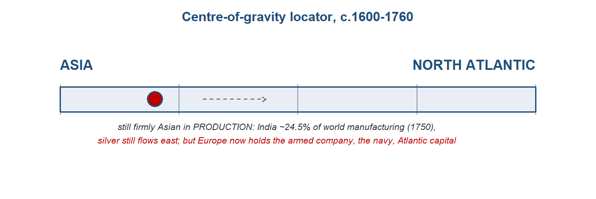
The stage and the cast
Two oceanic systems ran in parallel through this period, and the chapter holds both in view. The first was the Indian Ocean as it had always been — a relay of spices, cottons and silver — now contested by armed European companies. The second was the Atlantic, a newer machine of sugar and slavery that built European capital and demand without sending much back into the Asian trade. The actors below run east to west, the direction goods were made and bullion flowed: the Mughal cotton workshop and the Qing silver sink first, then the two northern companies that grafted onto them, then the Atlantic complex and the monetary contrast cases that the silver thread will use. The demographic weights set the scene. Around 1618, on the eve of the century’s crisis, China held perhaps 150 million people, India about 116 million, and all of Europe around 100 million — a reminder that the economies of this chapter were, in population and output alike, weighted toward Asia.3
3 Sources: Parker (Loc 1,249, 1,261) on populations c.1618 of China ~150m, India ~116m and Europe ~100m. Read more: Parker (2013), Global Crisis.
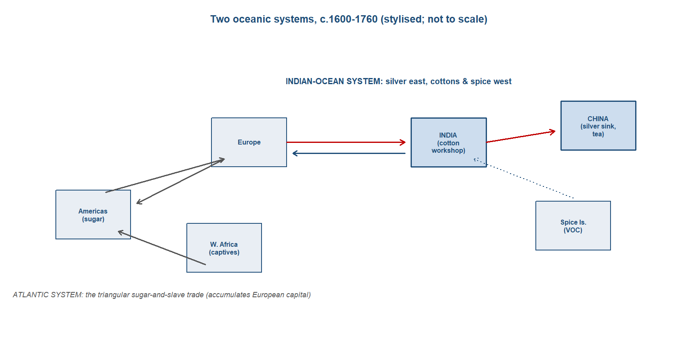
TipDramatis personae
The economic actors of c.1600–1760, east to west, and what changed since the last chapter. India appears in every chapter, profiled most fully.
- Mughal India — still the world’s cotton workshop, but the empire fragments after Aurangzeb’s death in 1707.
- Qing China — the silver sink continues under a new dynasty after the 1644 crisis; the Canton tea trade opens.
- The Dutch VOC (1602) — new as an organised actor: the first joint-stock multinational, armed monopolist of the spice islands.
- The English EIC (1600) — new as an organised actor: a textiles trader that becomes a territorial power.
- The Atlantic plantation complex — maturing: sugar and slavery, the rival oceanic system.
- West Africa and the Ottomans — carried from the last chapter for the monetary contrasts the silver thread draws.
TipMughal India — the cotton workshop the silver flowed to
India ran through every chapter of this book as the indispensable midpoint of the ocean, and in this period it carried more of the world’s production than any other economy. On the Bairoch-type estimates that historians use to weigh manufacturing across regions, India made on the order of 24.5 per cent of the world’s manufacturing output around 1750, and India and China together something like 57 per cent — figures to read as orders of magnitude rather than audited series, but ones that place the workshop of the connected world firmly in Asia at the date this chapter closes. The base of that weight was, as it had been for almost two thousand years, the land and the loom. Beneath the Mughal state the older productive order ran on: the village and its fields, the weaving towns of Bengal, Coromandel and Gujarat, and the merchant and banking communities that financed the trade. None of the European arrivals of the seventeenth century changed that pattern; they entered it and paid to do so.4
The cloth was the heart of it. India was the great cotton-textile workshop of the world, weaving the calicoes and Coromandel cottons that moved in volume across the Indian Ocean and, once the companies discovered them, across the Atlantic too. Parthasarathi’s argument was that this rested on a genuine comparative advantage: Indian weavers produced cloth that was cheaper and better than anything Europe could match, on wages that bought roughly what English wages bought in grain. The trade was already large before the European companies tried to corner it, and once they did the scale is visible in their own books. The English company’s textile imports reached about 1.76 million pieces a year by the mid-1680s, some 83 per cent of all its trade, and by 1700 European company cloth imports ran above 877,000 untailored pieces a year as cottons displaced rice and spices as the principal good of the eastern trade.5
What made India remarkable in this particular period, beyond the cloth, was money. The subcontinent was one of the ocean’s great silver sinks, second only to China. New World silver reached the Mughal heartland at something like 185 tonnes a year between 1586 and 1605, and across the two centuries from 1600 India absorbed perhaps a fifth of all the precious metal the world produced. The metal stayed because it paid to bring it and because a deeply monetised fisc could swallow it. The empire’s recorded revenue ran at around 120 million silver coins a year about 1615 — against perhaps 45 million for the Ottomans and 15 million for Safavid Iran, a measure of how much larger the Mughal fiscal machine was than its neighbours. The striking feature was that the inflow met rising money demand rather than flooding the money supply: the silver and gold the Dutch and English shipped into Bengal, running at roughly 4.15 million rupees a year and about 85 per cent silver between 1709 and 1717, were absorbed without inflation. This was a money-demand economy taking in bullion and minting it into the coin of an empire, not a money-supply shock driving up prices.6
The cloth and the silver met in Bengal, which by 1700 had become Europe’s single most important Asian supplier. The province’s weaving towns drew the companies’ bullion in exchange for cotton and silk, and the trade supported well over a hundred thousand textile jobs at its height. This was the demand-pull that drew Indian production outward — what de Vries would later call an industrious revolution working on the Asian side as much as the European: households putting more labour into market goods to earn the silver the world was offering for their cloth. Bengal’s prosperity was not the gift of the company books that recorded it; it was the prior condition that made the province worth fighting over.7
A caution belongs here, and it is the chapter’s hardest lesson applied to India. The scale was imperial grandeur more than rising income per head. The aggregate figures — a quarter of the world’s manufacturing, a fifth of its silver — measured the size of the workshop, not the welfare of those inside it. India’s per-capita income had probably been above three-fifths of Britain’s around 1600 on the best historical national accounts, but it was sliding relative to north-west Europe across the seventeenth and eighteenth centuries, and the first consumption gap was detectable by about 1700, when a London labourer’s wage bought several subsistence baskets against roughly one in the great Asian cities. The welfare comparison is contested and the Indian wage data are thin, so this is a signal rather than a settled verdict; but it disciplines any reading of the workshop’s size as modern growth.8
The political frame around all this was breaking. Aurangzeb died in 1707 leaving a reserve of some 240 million rupees, but the empire he left fragmented quickly. The Agra treasury fell from about 90 million rupees in 1707 to roughly 10 million by 1720; through the 1720s the great provinces — Bengal, Hyderabad, the Punjab — went de facto independent while keeping the emperor’s name on their coins; and in 1739 Nadir Shah sacked Delhi and carried off the Peacock Throne. By 1748 the empire was, in one assessment, totally bankrupt. The richest province had detached itself from a hollow centre, and its wealth now lay open. Bengal — Europe’s chief supplier, its weaving heart, the silver’s destination — had become the prize, and the next phase of the story opens on the contest for it.9
Trade profile
- Main exports — cotton textiles above all, the cheap, high-quality calicoes and Coromandel cottons the whole world wanted, from the weaving towns of Bengal, Coromandel and Gujarat; raw silk; saltpetre, indigo and other high-value craft and agrarian goods.
- Main imports — silver above all, drawn in by arbitrage and absorbed into the Mughal coinage (~185 tonnes a year into the heartland, 1586–1605; ~20 per cent of the world’s precious metals, 1600–1800); gold; and war-horses from the Gulf and Arabia.
- Export markets — the European companies, paying largely in bullion, with Bengal as their single most important supplier by 1700; Southeast Asia and the eastern ocean for cloth; the Red Sea, the Gulf and the wider Indian Ocean.
- Import sources — the New World by way of Europe (silver, via the companies’ bullion shipments); the Gulf and Arabia (horses, bullion); the intra-Asian country trade that the company ledgers under-recorded.10
10 Sources: Eaton (Loc 7104, 7051, 6906) on cloth exports, silver inflows and Bengal’s pre-eminence; Eaton (Loc 7055) on the scale of Mughal revenue. Read more: Roy (2012), India in the World Economy.
9 Sources: Parker (Loc 10,674) on Aurangzeb leaving 240m rupees at his death in 1707; Eaton on the Agra treasury falling from 90m (1707) to ~10m (1720), provincial independence in the 1720s, Nadir Shah’s sack of Delhi (1739), and the empire “totally bankrupt” by 1748. Read more: Eaton (2019), India in the Persianate Age.
8 Sources: Broadberry & Gupta (2006) on Indian GDP per capita relative to Britain’s and its decline; Parker (Loc 16,435) on the c.1700 welfare-ratio gap. Read more: Broadberry, Guan & Li (2018), “China, Europe, and the Great Divergence.”
7 Sources: Eaton (Loc 6906) on Bengal as Europe’s single most important Asian supplier by 1700; Pearson on the +100,000 Bengal textile jobs; de Vries (2010) on the industrious revolution. Read more: Chaudhuri (1978), The Trading World of Asia and the English East India Company.
6 Sources: Eaton (Loc 7051, 7057) on ~185 t/yr of New World silver to the Mughal heartland (1586–1605) and India absorbing ~20% of world precious metals (1600–1800); Eaton (Loc 7055) on Mughal revenue of ~120m silver coins c.1615 versus Ottoman 45m and Iran 15m; Eaton (Loc 6913, 6916) on Bengal’s ~4.15m rupees/yr, 85% silver (1709–17), absorbed without inflation. Read more: Eaton (2019), India in the Persianate Age.
5 Sources: Eaton (Loc 7104) on EIC textile imports of 1.76m pieces/yr (~83% of trade) c.1684, and cottons displacing rice and spices, with >877,000 pieces/yr by 1700; Parthasarathi (2011) on Indian comparative advantage in cloth. Read more: Riello (2013), Cotton: The Fabric that Made the Modern World.
4 Sources: Bairoch (1982) on India’s ~24.5% of world manufacturing in 1750; Roy (p.27) on the long-run land-and-loom base. Read more: Parthasarathi (2011), Why Europe Grew Rich and Asia Did Not.
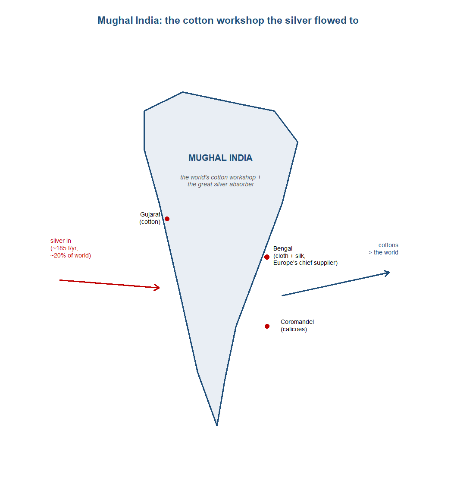
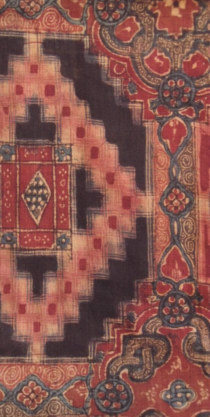
TipQing China — the silver sink, now selling tea
China entered this chapter as it had left the last — the great silver sink — but under a new dynasty and after a catastrophe. The Ming had collapsed in the mid-century crisis: rebels and then the Manchus took Beijing in 1644, the last Ming emperor hanged himself, and the conquest that followed was as costly as the climate and fiscal shocks that preceded it. Cultivated land had fallen from about 191 million acres in 1602 to 67 million by 1645, a measure of how far the agrarian base had contracted. The Qing that emerged rebuilt the inward-facing, silver-based fisc on Ming foundations. By the eighteenth century the state had restored the granary system to a scale the late Ming had never reached — ever-normal stores running to tens of thousands of tonnes in a dozen provinces — and fixed its land-tax assessments, the tax that supplied some three-quarters of state income, the mark of a recovered agrarian empire rather than a commercial one.11
The silver kept flowing in, but a caveat carried over from the Ming holds for the Qing too: this was accommodation, not causation. Chinese demand for silver was endogenous, the product of an internally monetising economy and a fisc that reckoned in the metal; the foreign inflow lubricated a commercial expansion already under way rather than driving it. What was new in the eighteenth century was the good the companies came to buy. The English company’s tea imports from Canton rose toward roughly 12 million pounds a year by 1757, and tea became the article that would carry the China trade into the next century. The pattern was the old one in a new commodity: China sold a processed export the West could not match, and the West paid in silver.12
Yet China is also where this chapter teaches its hardest lesson, because China has the best evidence for it. The florescence of the great Asian economies was extensive, not per-capita — aggregate grandeur, not rising living standards. The Jiangnan delta, the richest region in China, ran its agriculture at something like eight times England’s labour intensity but produced only about nine times the output: more hands for barely more product, the signature of involution rather than growth. Family income in Jiangnan fell roughly 42 per cent between 1620 and 1820. And on the best historical national accounts China was running at about 55 per cent of the European leader’s GDP per head by 1700, with the per-capita gap opening from around that date — earlier than the older datings of the divergence, later than a purely Eurocentric account would have it. The silver sink was real and the workshop was real, but neither was modern growth.13
Trade profile
- Main exports — silk and porcelain as before, and increasingly tea, drawn out of Canton by foreign silver; the empire ran a structural surplus the world settled in bullion.
- Main imports — silver above all, meeting an internally-driven money demand rather than flooding the money supply.
- Export markets — the European companies at Canton (tea, silk, porcelain); the wider intra-Asian trade, which still exceeded the East–West trade in value.
- Import sources — the New World and Japan for bullion, carried in largely through the European companies and the older Pacific and maritime circuits.14
14 Sources: von Glahn (Loc 4840) on the silver inflow, the surplus, and intra-Asian trade exceeding East–West trade; Roy (p.93) on tea. Read more: von Glahn (2016), The Economic History of China.
13 Sources: von Glahn (Loc 4528, 4531) on Jiangnan labour intensity ~8x England’s against output ~9x higher, and family income falling ~42% from 1620 to 1820; Broadberry, Guan & Li (2018) on China at ~55% of the European leader’s GDP per capita by 1700, the divergence opening c.1700. Read more: von Glahn (2016), The Economic History of China.
12 Sources: von Glahn (Loc 4840) on the endogenous money demand behind the silver inflow and intra-Asian trade; Roy (p.93) on Chinese tea becoming a principal Asian import, EIC tea imports rising toward ~12m lb/yr by 1757. Read more: von Glahn (2016), The Economic History of China.
11 Sources: Parker (Loc 4171) on cultivated land falling from 191m acres (1602) to 67m (1645); Parker (Loc 16,221) on the Qing granary system; von Glahn on land tax as ~three-quarters of state income and the 1644 founding of the Qing. Read more: von Glahn (2016), The Economic History of China.
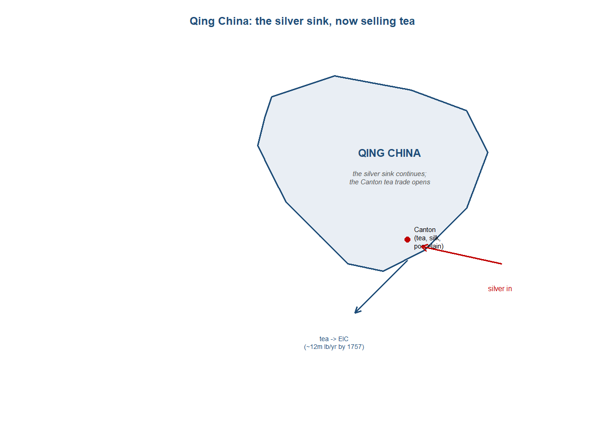
TipThe Dutch VOC — the first joint-stock multinational, armed monopolist of the spice islands
The Dutch East India Company, the Vereenigde Oostindische Compagnie, was chartered in 1602, two years after its English rival, and it was a different kind of creature from anything the ocean had seen. It fused three things that had stood apart in earlier trade. The first was permanent joint-stock capital: where a Portuguese armada or a Levant venture was financed voyage by voyage and wound up on its return, the VOC raised a standing fund that did not have to be repaid at the end of each season, so the enterprise itself, not the single cargo, became the thing investors owned. The second was internalised violence — the company carried its own forts, garrisons and fleets, so that protection was no longer bought from a sovereign or a convoy but produced in-house. The third was the separation of ownership from management: the shareholders who put up the capital were not the salaried servants who ran the factories and sailed the ships, and the company was governed by a board of seventeen directors, the Heren XVII, on which Amsterdam held eight of the seventeen seats. This was the institutional package — capital, coercion and a salaried bureaucracy under one charter — that Asian merchant capital, for all its scale, had not assembled.15
The 1602 flotation was itself a landmark. The capital was raised by public subscription, the shares were transferable, and the market that grew up to trade them in Amsterdam is generally reckoned the first stock exchange — the company was, in effect, the first joint-stock multinational and the parent of the first securities market. Niels Steensgaard read the deeper significance of this institutional turn as a protection-cost revolution. The older long-distance trade, the peddler-and-caravan mode, had treated protection as an external, unpredictable charge — tolls, bribes, the risk of plunder — that no merchant controlled. The companies turned protection into a tradable input they produced and priced themselves, and in doing so they integrated markets and stabilised supply in a way the older mode could not. On this reading the Portuguese Estado da India, which sold protection through its pass system but never internalised the trade, was an institutional failure that the joint-stock company eclipsed.16
The monopoly was enforced by force, and the enforcement was deliberate. On the Banda islands, the world’s only source of nutmeg and mace, the governor-general Jan Pieterszoon Coen carried out a depopulation in 1621 that left perhaps 1,000 of some 15,000 Bandanese alive; for the operation Coen was compensated around 45,000 guilders. Two years later, in 1623, the company executed a group of English and Japanese traders at the Amboina massacre, clearing a rival from the clove trade. To hold the clove monopoly the VOC even controlled supply by destruction, burning roughly 65,000 clove trees in 1625 to keep production inside its own islands. The violence paid because the rents were extraordinary: the gross profit on spices in the seventeenth century ran at around 300 per cent, against perhaps 30 to 40 per cent on grain — monopoly rents on a scale that made depopulation, in the company’s accounting, a commercial input.17
The strategy worked on its own terms. The spice islands fell one after another — Amboina and Tidore in 1605, Malacca in 1641, Ceylon in 1656 and 1658, Cochin in 1663 — and by the late 1660s the Dutch could claim a virtual monopoly on nutmeg, mace, cloves and cinnamon. The spices were the company’s substance: across its first fifty years roughly 40 per cent of the declared value of dividends was paid not in cash but in cloves, mace and pepper. That practice could not last. From 1644 the company was forced to pay its dividends in cash, and the costs of holding an armed empire told on the balance sheet: by 1692 the VOC stood some 4 million guilders in debt. The monopoly that armed coercion had built was expensive to keep, and the institutional triumph carried a fiscal price.18
Trade profile
- Main exports — fine spices above all: nutmeg, mace and cloves from the monopolised eastern islands, plus pepper and Ceylon cinnamon, carried home to the European market.
- Main imports — silver and bullion to pay for Asian goods, the companies settling most of their Asian purchases in precious metal; provisions, naval stores and arms for the forts and fleets that produced the company’s protection.
- Export markets — Amsterdam and, through it, the European spice market the company sought to corner; intra-Asian markets supplied through its own carrying trade.
- Import sources — the Banda islands (nutmeg and mace), Amboina and the Moluccas (cloves), Ceylon (cinnamon) and the wider archipelago, held by force; Europe and the Americas for the silver that paid for them.19
19 Sources: Krondl (Loc 3602, 3097, 3967) on the spice monopoly and dividends. Read more: Prakash (1998), European Commercial Enterprise in Pre-Colonial India.
18 Sources: Krondl (Loc 3602, 3600, 3967, 3971) on the islands falling, dividends paid in spices, the 1644 shift to cash dividends, and the company’s debt by 1692. Read more: Steensgaard (1974), The Asian Trade Revolution of the Seventeenth Century.
17 Sources: Krondl (Loc 3576, 3587, 3596, 3097) on Banda, Amboina, the burned clove trees, and spice-versus-grain profit margins. Read more: Prakash (1998), European Commercial Enterprise in Pre-Colonial India.
16 Sources: Krondl (Loc 3210) on the VOC flotation. Read more: Steensgaard (1974), The Asian Trade Revolution of the Seventeenth Century.
15 Sources: Krondl (Loc 3210, 3211) on the VOC’s 1602 charter and the Heren XVII. Read more: Steensgaard (1974), The Asian Trade Revolution of the Seventeenth Century.
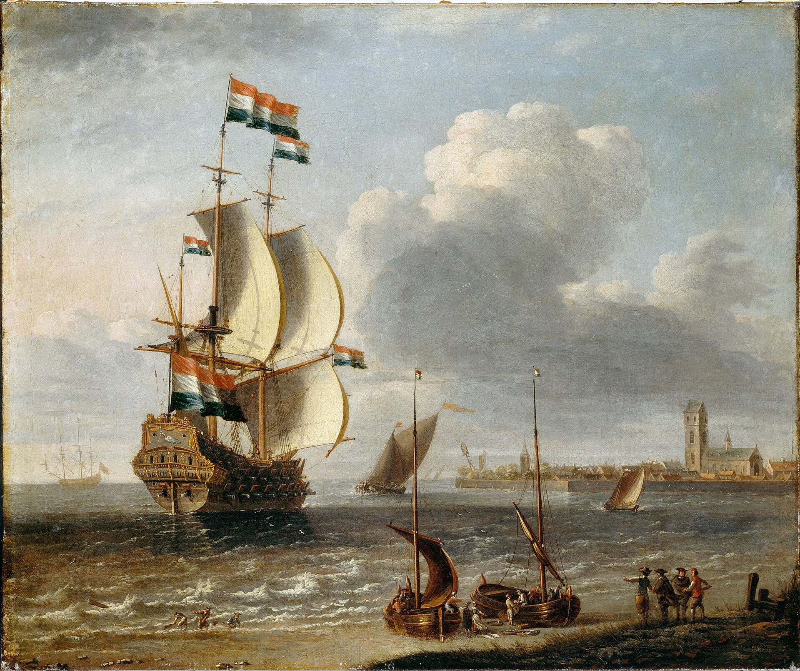
NoteResearch in focus — Steensgaard (1974): the protection-cost revolution
Aim. To explain why the chartered East India companies displaced the older Portuguese Estado and the overland caravan trade. Question. What was the decisive advantage of the joint-stock company over the peddler-merchant and the redistributive sea-toll state? Data and method. A comparative institutional history of the Portuguese, Dutch and English presences in Asia, reading their costs of “protection” — the price of safe passage and enforced exchange — as the key analytical variable. Findings. The companies’ edge was institutional, not merely commercial: by internalising violence and integrating dispersed markets under salaried management, the VOC and EIC subordinated protection to the market and turned an external toll into an internal cost, which the caravan trade and the Portuguese toll-state could not match. Caveats. K. N. Chaudhuri’s continuity reading holds that the companies depended throughout on Indian merchants, brokers and capital, so the “revolution” was partial; the protection-cost gain is hard to quantify directly from the surviving records.
TipThe English EIC — the textiles trader that became a territorial power
The English East India Company was chartered in 1600, the senior of the two great northern companies by two years, and for its first decades it was the lesser of them. Shut out of the fine-spice islands by Dutch arms — the Amboina killings of 1623 were aimed in part at English traders — the EIC found its fortune elsewhere, and the pivot defined the company. Its trade turned from spices to Indian cotton cloth. By around 1684 the EIC was importing some 1.76 million pieces of textiles a year, about 83 per cent of the company’s whole trade; by about 1689 it was bringing in more than a million calico pieces a year, roughly two-thirds of its business. The cloth the company shipped came above all from Bengal, which by 1700 had become Europe’s single most important Asian supplier. The EIC had become, before anything else, a textiles trader.20
The company paid for these goods, as its rivals did, largely in bullion. India made cloth the world wanted and bought little that Europe made, so the companies settled the difference in silver — by most accounts somewhere between two-thirds and seven-eighths of the value of their Asian purchases. India absorbed perhaps a fifth of the world’s precious metals across the two centuries from 1600. And the EIC’s seaborne trade, large as it was, rode on a far bigger Asian commerce it did not control. The country trade — the intra-Asian carrying business that Emily Erikson placed at the centre of the company’s working life — moved goods on a scale the company’s own ledgers never captured, and Asian merchants out-shipped the Europeans on their own routes. In Bengal silk the contrast was stark: in the 1730s the English and Dutch together exported no more than about 150 tonnes a year by sea, while in the 1750s Asian merchants moved roughly five times as much overland. The company was a participant in an Asian-run system, not its master.21
What set the EIC apart in the long run was not its trade but the state behind it. The financial revolution after 1688 gave Britain a fiscal-military machine its rivals could not match: the Bank of England, founded in 1694, anchored a system of funded public debt that let the state borrow at scale and on credible terms. British debt climbed from £16.7m in 1697 to £132.6m by 1763, and the debt was a source of strength, not weakness. John Brewer’s mechanism set out why: a credible, funded national debt allowed Britain to out-borrow its rivals, sustain a permanent navy, and so win the long contest of the oceans. The company traded under the protection of, and increasingly in partnership with, the most effective fiscal-military state of the age.22
The EIC was also, from early on, an armed and governing body. It kept its own private army — some 20,000 men by the 1760s, swelling toward 115,000 after Plassey — and Philip Stern argued that this made it a company-state from the start: not a trading firm that later turned conqueror, but a sovereign enterprise that governed, taxed and warred under its charter throughout. The turn from trader to territorial power came at Plassey in 1757, where the company defeated the Nawab of Bengal and began to draw on the province’s revenue rather than merely trade in its goods; with the grant of the Diwani in 1765 it funded its own exports from Bengal’s own revenue, cutting its shipments of bullion. The detail of that conquest belongs to the period narrative; what matters for the company’s profile is the change of kind. The textiles trader had become a revenue-extracting state.23
Trade profile
- Main exports — Indian cotton textiles above all, calicoes and other cloth from Bengal and Coromandel, the bulk of the company’s trade by the 1680s; later Chinese tea; and, after Plassey, the revenue of Bengal itself.
- Main imports — silver and bullion above all, the metal that paid for Asian goods (two-thirds to seven-eighths of purchases); some woollens and metals that found a thin Asian market.
- Export markets — London and the European re-export market for Indian cloth, until domestic calico bans complicated it; the intra-Asian country-trade circuits.
- Import sources — Bengal above all, with Coromandel and Gujarat, for cloth; Canton for tea; Europe and the Americas for the silver that settled the balance.24
24 Sources: Eaton (Loc 7104, 7057) on the textile trade and bullion; Roy (Page 95) on the country trade. Read more: Erikson (2014), Between Monopoly and Free Trade.
23 Sources: Findlay & O’Rourke (2007) on the EIC army; Roy (Page 108, 109) on the turn at Plassey and the Diwani. Read more: Stern (2011), The Company-State.
22 Sources: Findlay & O’Rourke (2007) on British debt rising from £16.7m (1697) to £132.6m (1763) and the post-Plassey army; Smith (Loc 5639) on the Bank of England (1694). Read more: Brewer (1989), The Sinews of Power.
21 Sources: Eaton (Loc 7057) on bullion settlement and India’s ~20% of world precious metals; Roy (Page 95) on the Bengal-silk contrast (up to ~150 t/yr by sea, 1730s; Asian merchants ~5x as much overland, 1750s). Read more: Erikson (2014), Between Monopoly and Free Trade.
20 Sources: Eaton (Loc 7104) on EIC textile imports c.1684; Postrel (Page 130) on calico pieces (~two-thirds of trade) by c.1689; Eaton (Loc 6906) on Bengal’s pre-eminence. Read more: Prakash (1998), European Commercial Enterprise in Pre-Colonial India.
TipThe Atlantic plantation complex — sugar, slavery and the rival oceanic system
While the companies fought over the Indian Ocean, a second maritime economy was hardening in the Atlantic, and it ran on a different logic. The Indian-Ocean trade carried Asian manufactures east to west and drained European silver the other way; the Atlantic built a producing system of its own, on land emptied of its first inhabitants and worked by people carried across the sea in chains. Its signature good was sugar, and the appetite it created was vast: English sugar consumption rose from above four pounds a head a year around 1700 to roughly twenty-four pounds by 1800, a sixfold rise that pulled a whole oceanic economy into being. Sidney Mintz read this as the making of a modern consuming proletariat — cheap calories and a cheap stimulant for a wage-working population — and Sven Beckert called the armed, coerced system that produced it “war capitalism”: not the gentle commerce of the textbooks but plantations, slaving and force, accumulating the capital and the demand on which the next century’s industry would draw. This was the rival oceanic system to the one the companies contested, and it mattered more for what came after than for what it returned to the Asian trade.25
The engine of the system was the trans-Atlantic slave trade, and in the seventeenth century it became central. Around two million Africans were enslaved and shipped across the Atlantic across the century, out of some thirty-five thousand documented slaving voyages over the whole span of the trade. The early traffic was Iberian: before 1641 Spain and Portugal together accounted for about ninety-seven per cent of it, and only later did the Dutch, English and French companies push in. The trade’s destination tells the rest of the story — it fed the sugar islands above all. Of roughly one hundred and sixty thousand captives disembarked alive in the 1680s, more than one hundred and forty-one thousand went to the Caribbean, the plantation core where mortality was so high that the system could be sustained only by continuous fresh importation. The numbers were an accounting of coercion, not commerce in the ordinary sense, and they should not be softened into one.26
The shape that organised these flows was the triangular trade. European manufactures and, increasingly, Indian cottons went south to the West African coast and were exchanged for captives; the captives were carried west to the plantations of the Americas; and the sugar, and later the cotton and tobacco, came back to Europe to be refined, consumed and re-exported. Each leg fed the next, and the cloth that opened this chapter belonged to the first of them: Indian calico was among the goods European traders carried to Africa to buy people, so that the Indian Ocean and the Atlantic, distinct as oceanic systems, were stitched together at the point of purchase. The triangle accumulated value in Europe at every turn of the circuit, and it did so without sending much back into the Asian trade that had to be settled, as ever, in silver.27
That asymmetry is the analytical point. The Indian-Ocean trade was a draining trade for Europe — bullion went east to buy goods Europe could not make, and stayed there. The Atlantic was an accumulating one — it built European capital and European demand at home rather than discharging them into a foreign sink. The plantation complex produced its own staples, manned by purchased labour, and returned the proceeds to European ports and European pockets; the “ghost acres” of Caribbean sugar land and the captive labour that worked them relieved constraints that bound producers in the Old World. This was the capital-and-demand machine that the Indian-Ocean trade, for all its scale, did not give back to Europe, and it is the part of the early-modern world economy that matters most for the chapter that follows, where the cotton trade reverses and the divergence opens.28
Behind the choice of African labour lay a disease ecology, not a preference. The peoples of the Americas had been destroyed by Old World pathogens to which they had no inherited resistance: in Mexico the population fell from around eight to ten million at contact toward two to three million by the century’s end, and the pandemic of 1545 to 1548 alone killed perhaps sixty to ninety per cent of those it reached. That collapse emptied the land the plantations would occupy and removed the labour force that might have worked it. At the same time the tropical and sub-tropical plantation zones were lethal environments for Europeans, as falciparum malaria and, from the 1640s, yellow fever took hold. African labourers, drawn from regions where these diseases were endemic, survived the plantation environment at rates Europeans and the surviving Amerindians could not. The slave system rested, in large part, on this differential mortality: a disease geography that made coerced African labour the foundation of the rival ocean’s economy.29
Trade profile
- Main exports — sugar above all, refined and re-exported from European ports; tobacco, and later raw cotton, from the plantation Americas; the accumulated capital and consuming demand that the system returned to Europe rather than to the Asian trade.
- Main imports — enslaved Africans, the coerced labour on which the whole complex rested (around two million carried across the Atlantic in the seventeenth century); European manufactures and Indian cottons, carried to the African coast to purchase captives; provisions and the apparatus of plantation production.
- Export markets — Europe above all, where sugar was refined, consumed and re-exported and where the capital accumulated; the wider Atlantic economy the complex fed.
- Import sources — West Africa (captive labour); Europe and Asia for the manufactures and cottons that bought them; the Americas themselves for the staples the plantations produced.30
30 Sources: Parker (Loc 3,211) on the seventeenth-century slave traffic; Harper (Loc 2,638) on Atlantic sugar consumption; Harper (Loc 2,320) on the demographic emptying behind the system. Read more: Mintz (1985), Sweetness and Power; Beckert (2014), Empire of Cotton.
29 Sources: Harper (Loc 2,320, 2,362) on the Mexican die-off from eight-to-ten million toward two-to-three million and the 1545–48 pandemic killing sixty to ninety per cent; Harper (Loc 2,890) on slave imports carrying falciparum into Carolina from the 1680s; Harper (Loc 2,455) on the first Caribbean yellow-fever epidemic from 1647. Read more: Harper (2021), Plagues upon the Earth.
28 Sources: Mintz (1985) on the Atlantic-built European demand, set against the eastward silver drain. Read more: Findlay & O’Rourke (2007), Power and Plenty.
27 Sources: Parker (Loc 3,211) on the seventeenth-century traffic, with the triangular circuit linking European and Indian goods, African captives and American staples. Read more: Beckert (2014), Empire of Cotton.
26 Sources: Parker (Loc 3,211) on roughly two million Africans enslaved in the seventeenth century; Parker (Loc 12,294, 12,297) on some thirty-five thousand documented voyages and the pre-1641 Spanish-and-Portuguese share of about ninety-seven per cent; Parker (Loc 12,299) on more than one hundred and forty-one thousand of the 1680s’ roughly one hundred and sixty thousand disembarked captives going to the Caribbean. Read more: Beckert (2014), Empire of Cotton.
25 Sources: Harper (Loc 2,638) on English sugar consumption rising from above four pounds a head c.1700 to twenty-four pounds by 1800. Read more: Mintz (1985), Sweetness and Power; Beckert (2014), Empire of Cotton.
TipWest Africa and the Ottomans — the same silver, the opposite fate
The two regions carried over from the last chapter served one purpose in this one: they showed what the same world silver did where it met a different economy. The framework had two axes. The first, monetary, asked whether the inflow met a rising demand for money and was absorbed, or flooded the money supply and inflated it. The second, real, asked whether a region exported the output of its labour — manufactures, which deepened specialisation — or its factors and stores of value, its people and its raw bullion, which depleted it. China and Mughal India scored well on both: money-demand economies that exported cloth and silk and tea, and absorbed the silver without inflation. West Africa and the Ottoman lands sat at the other end of each axis, and reached the European outcome of inflation by routes that were instructively different.31
West Africa was the inversion. Its economies ran on commodity currencies — cowrie shells, cloth, copper manillas — and as European traders poured these in to buy gold, goods and captives, the currencies inflated against bullion-backed European purchasing power. Something on the order of thirty billion cowries went to the Bight of Benin between 1500 and 1875, about forty-four per cent of West Africa’s total cowrie inflow, and the debasement that followed was steep: the nzimbu currency of Kongo lost two-thirds of its value by 1619, and the Angolan macuta fell from five hundred reais to forty. The region did not absorb the inflow into deepening commerce; it inflated, and at the same time it exported not the output of its labour but its labour itself, in the form of captives, and its raw gold. Toby Green called this an early “deindustrialisation by monetary divergence” — the conceptual pair to the deindustrialisation India would suffer later by machinery and coercion. Where the silver thread enriched the Asian workshop, the same money system hollowed out the African coast.32
The Ottoman case was the European-style control: an economy that reached the European outcome of inflation and falling real wages, but partly by a channel of its own. Silver supply met heavy debasement of the coinage. The silver content of the akce fell from about 0.7 grams in the 1580s to roughly 0.3 grams by 1640, and prices rose accordingly, with Istanbul real wages falling on the order of thirty to forty per cent across the sixteenth century. That looked like the European Price Revolution transplanted east. But the caveat matters, and Sevket Pamuk supplied it: the inflation was driven more by the sultan’s own debasement than by American silver. Measured in grams of silver rather than in nominal coin, Ottoman prices rose only modestly — so the empire reached the European result of inflation and squeezed real wages largely through a domestic monetary channel, not through the inflow of New World bullion that drove prices in the west.33
Set side by side, the two regions made the two-axis logic plain. The question was never simply how much silver arrived; it was whether the silver met a demand for money or flooded its supply, and whether a region sold the work of its hands or sold off its people and its stores of value. West Africa flooded its money supply with commodity currencies and exported its factors — captives and raw gold — and so inflated and depleted at once. The Ottoman lands inflated too, but by debasing their own coin while exporting little into the silver system as manufactures, reaching the European outcome down a different path. Neither did what China and Mughal India did, which was to absorb the metal into a deepening commercial economy and pay for it with the cloth and the spices the world wanted. The same world money, several fates, and the difference lay in the two questions, not in the quantity of silver alone.34
Trade profile
- Main exports — West Africa: captives above all, and raw gold, the factors and stores of value rather than the output of labour; the Ottoman lands: a net consumer within the silver system, exporting little in manufactures into it.
- Main imports — West Africa: cowrie shells, cloth and copper manillas, the commodity currencies European traders poured in, alongside bullion-backed European goods; the Ottoman lands: silver, met by heavy debasement of the domestic coinage.
- Export markets — West Africa: the Atlantic plantation complex (captives) and European traders working the coast (gold); the Ottoman lands: the eastern Mediterranean and the wider regional trade.
- Import sources — West Africa: Europe and its networks, carrying cowries drawn from the Indian Ocean, cloth and goods priced in American silver; the Ottoman lands: the silver-bearing trade of the Mediterranean and the empire’s own mints.35
35 Sources: Green (2019) on the West African currency flows and exports; Parker (Loc 2,428) and Ozmucur & Pamuk (2002) on Ottoman debasement and silver. Read more: Green (2019), A Fistful of Shells; Pamuk & Ozmucur (2002).
34 Sources: Green (2019) on the West African inversion and Ozmucur & Pamuk (2002) on the Ottoman channel, read through the chapter’s two-axis silver framework. Read more: Green (2019), A Fistful of Shells; Pamuk & Ozmucur (2002).
33 Sources: Parker (Loc 2,428) on the akce silver content falling from about 0.7 grams in the 1580s to roughly 0.3 grams by 1640; Ozmucur & Pamuk (2002) on Istanbul real wages falling roughly thirty to forty per cent across the sixteenth century, and on debasement rather than American silver driving the inflation. Read more: Pamuk & Ozmucur (2002).
32 Sources: Green (2019) on the cowrie inflow to the Bight of Benin (~30 billion, 1500–1875), the nzimbu losing two-thirds of its value by 1619, the macuta falling from 500 to 40 reais, and “deindustrialisation by monetary divergence.” Read more: Green (2019), A Fistful of Shells.
31 Sources: Eaton (Loc 6916) on Bengal silver absorbed without inflation as the contrast case, against which the two-axis framework reads the other regions. Read more: Pamuk & Ozmucur (2002).
NoteResearch in focus — Ozmucur & Pamuk (2002): Ottoman real wages, 1489–1914
Aim. To measure long-run living standards in the Ottoman lands and place them in the comparative early-modern record. Question. How did urban real wages move across four centuries, and what role did the sixteenth-century silver inflow play in the Ottoman price revolution? Data and method. Construction of nominal wage and price series, chiefly for Istanbul, from the account books of pious foundations and state institutions, deflated by a consumption basket to yield real wages in grams of silver. Findings. Real wages fell across the sixteenth century, by roughly a third to two-fifths at points, but the inflation owed more to domestic debasement of the silver coinage than to American silver, since prices expressed in grams of silver rose only modestly; the Ottoman case reached a European-style outcome partly through a different channel. Caveats. The series rests on institutional wages for a few occupations in a few cities, with gaps; the basket and the splicing across coinage regimes carry wide error bands, so the levels are indicative rather than precise.
NoteHow we know
This was the data-richest period in the book so far, and the reason is the companies themselves. The Dutch and English East India companies kept among the finest commercial records in history — standing archives of ships, cargoes, prices and accounts that let historians reconstruct the early-modern trade in a detail impossible for any earlier period. The numbers in this chapter — pieces of calico, tonnes of silver, percentage profits on spice — come overwhelmingly from those books and from the Smithian and chronicle sources that ran alongside them.
But the richness is also a trap, and the bias sharpens exactly as the evidence improves. Even Asian trade now survives largely through European company ledgers, and those ledgers recorded what the companies carried, not what the ocean did. The intra-Asian “country” trade — Asian merchants carrying Asian goods on Asian account — was systematically under-counted, and on the best estimates the intra-Asian trade was about a third larger in value than the whole East–West trade the companies dominated. Read the magnificent company numbers, then, knowing whose books they are: total Asian commerce was far larger than the slice the VOC and EIC shipped, and the European share looks bigger in the records than it was on the water.
Sources: Krondl, Eaton and Postrel for the company-book figures; von Glahn (Loc 4,840) on intra-Asian trade about one-third greater in value than the East–West trade; Erikson (2014) on the under-counted country trade. Read more: Erikson (2014), Between Monopoly and Free Trade; Findlay & O’Rourke (2007), Power and Plenty.
The period on its own terms
The years from 1600 to 1760 did not run as a smooth ascent. They opened in the violence of armed monopoly, passed through the worst global crisis of the pre-industrial age, turned on the cloth trade, and ended in territorial conquest. Six phases carry the story from the chartering of the companies to the field of Plassey — from crisis to conquest — and a master timeline holds them together before the analysis takes them apart.
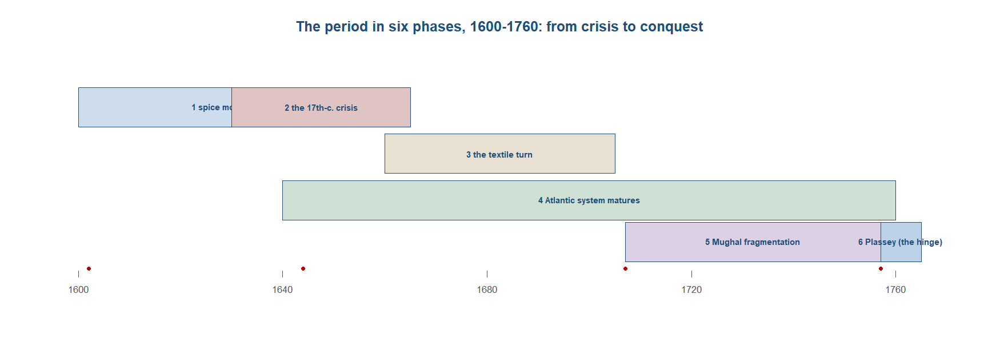
Phase 1 — the companies seize the spice monopoly by force (1600–1660s). The period opened not with trade but with a charter and a gun. The English East India Company was chartered in 1600 and the Dutch Vereenigde Oostindische Compagnie in 1602, and the second of the two was the more radical creature. The VOC raised a permanent joint-stock fund by public subscription, made its shares transferable, and was governed by a board of seventeen directors, the Heren XVII, on which Amsterdam held eight of the seventeen seats. Its 1602 flotation is generally reckoned the first initial public offering, and the Amsterdam market that grew up to trade its paper the first stock exchange. Here, in one institution, were three things that earlier long-distance trade had kept apart: standing capital that outlived the single voyage, salaried managers separated from the owners who financed them, and protection produced in-house by the company’s own forts and fleets rather than bought from a sovereign. This was the package Asian merchant capital, for all its scale, had never assembled.36
36 Sources: Krondl (Loc 3210, 3211) on the VOC’s 1602 charter, the flotation and the Heren XVII (Amsterdam eight of seventeen seats). Read more: Steensgaard (1974), The Asian Trade Revolution of the Seventeenth Century.
37 Sources: Krondl (Loc 3576, 3587) on the Banda depopulation (~1,000 of ~15,000) and Coen’s ~45,000-guilder compensation; Krondl (Loc 3596) on the ~65,000 clove trees burned in 1625; Krondl (Loc 3097) on spice profit at ~300% against grain at ~30–40%. Read more: Prakash (1998), European Commercial Enterprise in Pre-Colonial India.
The monopoly that capital served was enforced by deliberate violence. On the Banda islands, the world’s only source of nutmeg and mace, the governor-general Jan Pieterszoon Coen carried out a depopulation in 1621 that left perhaps 1,000 of some 15,000 Bandanese alive; for the operation Coen was compensated around 45,000 guilders. Two years later, in 1623, the company executed a group of English and Japanese traders at the Amboina massacre, clearing a rival from the clove trade. To hold the clove monopoly the VOC even managed supply by destruction, burning roughly 65,000 clove trees in 1625 so that production stayed inside its own islands. The killing paid because the rents were extraordinary. The seventeenth-century gross profit on spices ran at around 300 per cent, against perhaps 30 to 40 per cent on grain, and against margins like those a depopulation entered the company’s accounting as a commercial input rather than an atrocity.37
The strategy worked on its own terms, and the islands fell one after another. Amboina and Tidore went in 1605, Malacca in 1641, Ceylon in 1656 and 1658, Cochin in 1663, and by the late 1660s the Dutch could claim a virtual monopoly on nutmeg, mace, cloves and cinnamon. What the violence built was, in Niels Steensgaard’s reading, a protection-cost revolution. The older long-distance trade, the peddler-and-caravan mode, had treated protection as an external and unpredictable charge — tolls, bribes, the standing risk of plunder — that no merchant could control or price. The chartered company turned protection into a tradable input it produced itself, and in doing so it integrated markets and stabilised supply in a way the older mode could not. On this account the Portuguese Estado da India, which sold protection through its pass system but never internalised the trade itself, was an institutional failure that the joint-stock company eclipsed. The armed-monopoly model had arrived, and it was about to meet a shock far larger than any rival fleet.38
38 Sources: Krondl (Loc 2761, 3600) on the islands falling — Amboina/Tidore 1605, Malacca 1641, Ceylon 1656/1658, Cochin 1663; Krondl (Loc 3602) on the late-1660s Dutch monopoly on nutmeg, mace, cloves and cinnamon. Read more: Steensgaard (1974), The Asian Trade Revolution of the Seventeenth Century.
39 Sources: Parker (Loc 1,046) on the twelve Pacific eruptions of 1638–44 and (Loc 1,054) on the doubled ENSO frequency; Parker (Loc 1,009, 1,937) on the Maunder Minimum (1645–1715); Parker (Loc 436, 7,916) on ~50 revolts and rebellions across Eurasia, 1618–88. Read more: Parker (2013), Global Crisis.
Phase 2 — the seventeenth-century global crisis (1630s–60s). While the companies cornered the spice islands, the whole connected world tipped into the worst general crisis of the pre-industrial age, and Geoffrey Parker’s argument is that the timing was not coincidence. A single climatic forcing sat under it: the Maunder Minimum of low solar activity from 1645 to 1715, a record twelve Pacific volcanic eruptions between 1638 and 1644, and an El Nino pattern running at roughly twice its present frequency. Cooling on this scale bit hard on a world living near the subsistence margin, where a two-degree fall in temperature could cut rice yields by a third or more. The disorder it helped trigger was synchronous across Eurasia: Parker counts on the order of fifty revolts and rebellions between 1618 and 1688, from the Thirty Years War that gutted central Europe to risings from the Ottoman lands to Ming China. The period did not open onto smooth growth. It opened onto breakdown.39
The sharpest collapse came in China, and it folded climate, silver and fiscal strain together. The Ming fell in 1644: rebels and then the Manchus took Beijing, and the Chongzhen emperor hanged himself as the dynasty ended. The agrarian base behind the state had contracted brutally — cultivated land fell from about 191 million acres in 1602 to some 67 million by 1645 — while the monetary system convulsed. China’s silver-to-copper ratio spiralled from about 1:1700 in 1638 to 1:5000 by 1645 and 1:6000 by 1647, as silver imports collapsed from around 600 tonnes in 1636–40 to under 250 tonnes in 1641–45. Elsewhere the human cost ran as deep. A Gujarat famine in 1630–32 killed perhaps four million Mughal subjects; across Eurasia Parker reckons that something like a third of humanity died, with China losing over half in some places. This was demographic catastrophe on a scale the connected world had not seen since the Black Death.40
40 Sources: Parker (Loc 3,887, 3,894) on the Manchu capture of Beijing and Chongzhen’s suicide (1644); Parker (Loc 4,171) on cultivated land falling from 191m acres (1602) to 67m (1645); Parker (Loc 2,438, 2,441) on the silver:copper ratio (1:1700 in 1638 to 1:6000 in 1647) and (Loc 3,685) on silver imports falling from ~600 t (1636–40) to <250 t (1641–45); Parker (Loc 10,505) on the Gujarat famine of 1630–32 (~4 million dead) and (Loc 25, 1,280) on “a third of humanity” and China “over half.” Read more: Parker (2013), Global Crisis.
41 Sources: the Atwell–von Glahn dispute on the silver–Ming link, taught as contested; Parker (Loc 2,438) on the silver:copper spiral as the monetary face of the fall. Read more: von Glahn (2016), The Economic History of China; Parker (2013), Global Crisis.
A caution belongs here, because the link between the silver dip and the Ming fall is contested, not settled. William Atwell argued that the interruption in silver imports in the 1630s and 1640s helped bring the dynasty down, choking a fisc that had come to reckon in the metal. Richard von Glahn disputes the strong form of that claim: the 1640s decline was small against the vast stock of silver China had taken in over the previous century, and rice prices rose rather than fell in the crisis years, which is hard to square with a pure monetary contraction. The safer reading, and the one this chapter teaches, is that the crisis was multi-causal — climate, silver and fiscal strain acting together — rather than a single silver cause. What the crisis fixes is the period’s direction. The years from 1600 to 1760 ran not as steady ascent but as violent disintegration followed by uneven re-integration, and that dating matters: the real divergence between Europe and Asia is best placed after this crisis, not before it.41
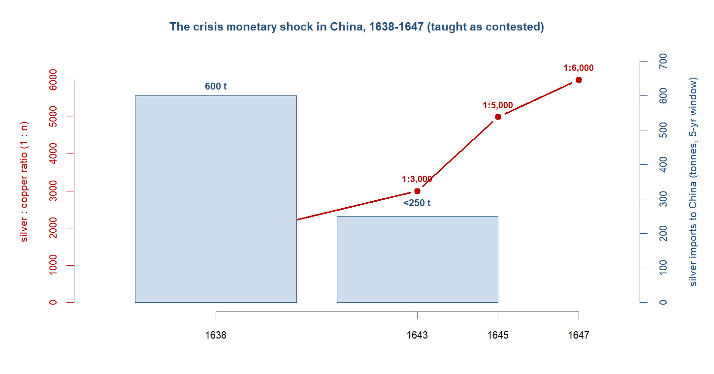
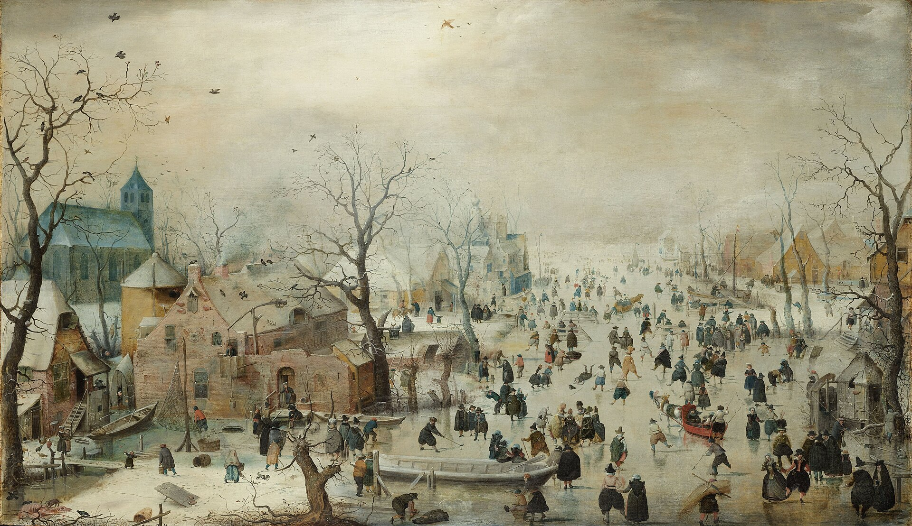
Phase 3 — the textile turn: from spices to Indian cottons (1660s–1700s). After the spice wars and the mid-century crisis, the principal good of the eastern trade quietly changed. Pepper and the fine spices that had drawn the first armadas gave way to cloth, and from the 1660s Indian cottons displaced rice and spices as the article the companies most wanted to carry. The shift was decisive and fast. By around 1684 the English company’s textile imports had reached roughly 1.76 million pieces a year, about 83 per cent of its entire trade; by about 1689 it was shipping home more than a million calico pieces a year, on the order of two-thirds of its business; and by 1700 European company cloth imports ran above 877,000 untailored pieces a year. Bengal, with its weaving towns and its raw silk, had become by 1700 Europe’s single most important Asian supplier. The companies had set out to corner the spice islands by force and ended up as freight handlers for the Indian loom.42
42 Sources: Eaton (Loc 7104) on EIC textile imports of 1.76m pieces/yr (~83% of trade) c.1684 and cottons displacing rice and spices, with >877,000 pieces/yr by 1700; Postrel (Page 130) on the EIC importing above one million calico pieces a year (~two-thirds of trade) by c.1689. Read more: Riello (2013), Cotton: The Fabric that Made the Modern World.
43 Sources: de Vries (2008) on the industrious revolution — households working longer to buy tea, sugar, tobacco, calicoes and porcelain — as the demand-pull behind the eastward trade. Read more: de Vries (2008), The Industrious Revolution.
The question this trade poses is why Europe paid in silver for a century and a half rather than turning the terms around, and the answer lay as much on the demand side as the supply side. A consumption revolution was pulling the trade along. European households were beginning to work longer and harder for the market, putting more hours into earning so they could buy the new groceries and stuffs the oceans now offered — tea, sugar, tobacco, porcelain and, above all, printed cotton. Jan de Vries called this the industrious revolution, a reallocation of household time toward earning and spending that ran ahead of any rise in wages, and it was this widening appetite, not falling transport costs or cheaper European goods, that made the eastward drain of bullion sustainable. The silver kept moving east because the demand for what it bought kept rising at home; calico was wanted because it was cheap, washable, colourfast and patterned in reds and indigos that European dyers could not fix, and people who had never owned figured cloth now could.43
Europe’s first response to a cloth it could not outproduce was not to compete but to legislate. Faced with Indian cottons that undersold and outperformed home textiles, the governments of the weaving states reached for import-substitution by law. France began banning printed cottons in 1686 to shelter its own woollen and silk weavers; England followed with a calico ban in 1700 and a tighter one in 1721, prohibiting the wearing of the very cloth its company was importing in millions of pieces. The bans were a measure of how superior the Indian product was: a trade that could be beaten in the market would not have needed an Act of Parliament to keep it out. They were also leaky and slow to bite — calicoes were still illegal in Paris as late as 1730, which tells us they were still being worn. Protection bought the domestic weaver time without yet giving him a competitive cloth.44
44 Sources: Postrel (Page 194) on France’s printed-cotton ban from 1686 and calicoes still illegal in Paris in 1730. Read more: Riello (2013), Cotton: The Fabric that Made the Modern World.
45 Sources: Parthasarathi (2011) on Indian textile dominance forcing Europe’s protectionist-and-innovative response, the seed of mechanised cotton. Read more: Parthasarathi (2011), Why Europe Grew Rich and Asia Did Not.
That sequence is the seed of an argument the next chapter will develop. Prasannan Parthasarathi turned the usual story on its head: it was precisely India’s dominance of the cloth market that forced Europe’s response, first the protective bans and tariffs and then, when those failed to deliver a cloth that could match the Indian one, the search for a mechanised substitute. On this reading the calico trade did not merely enrich the companies; it set the problem whose eventual solution — spinning and weaving by machine — would reverse the textile trade altogether. The fabric the whole world wanted, in other words, carried the trigger of its own eclipse. The point belongs to the divergence still to come; here it is enough to mark that the textile turn of the 1660s to 1700s was not a sideshow to the spice war but the main event, and the moment at which Asia’s productive lead began to provoke the European reaction that would one day overtake it.45
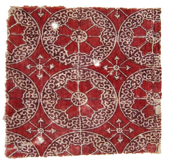
Phase 4 — the Atlantic rival system matures (17th–18th c.). While the companies contested the Indian Ocean, a second oceanic economy was hardening across the Atlantic, and across this period it matured from a scatter of plantations into a system. Sugar and slavery were its engine. The plantation colonies of the Caribbean and the American mainland produced a tropical staple that Europe could not grow and came to crave — English sugar consumption would climb from above four pounds a head a year in 1700 toward twenty-four by 1800 — and they produced it with enslaved labour shipped across the ocean. Unlike the eastern trade, which drained European bullion into Asia, the Atlantic accumulated capital and demand on the European side: profits, shipping, refining, credit and a widening market for groceries all pooled in the ports of the seaboard. Sidney Mintz read sugar as the commodity that schooled European mass consumption; Sven Beckert called the violent, state-backed apparatus that produced it war capitalism — slavery, expropriation and armed monopoly as the foundation on which a later industrial capitalism was built.46
46 Sources: Harper (Loc 2,638) on English sugar consumption rising from above four pounds a head a year in 1700 toward twenty-four by 1800. Read more: Mintz (1985), Sweetness and Power; Beckert (2014), Empire of Cotton.
47 Sources: Parker (Loc 3,211) on ~2 million Africans enslaved in the seventeenth century across ~35,000 documented voyages; Parker (Loc 12,294, 12,299) on >141,000 of ~160,000 captives disembarked in the 1680s going to the Caribbean. Read more: Green (2019), A Fistful of Shells.
The trade in people was central, and it grew through the period. Across the seventeenth century some two million Africans were carried into Atlantic slavery; the whole traffic, documented across roughly 35,000 recorded voyages, was overwhelmingly a Caribbean and American business, and one that fed the sugar islands above all. Of about 160,000 captives disembarked in the 1680s, more than 141,000 went to the Caribbean. The system also stitched the two oceans together: Indian calico, the cloth of the textile turn, was carried to the West African coast and exchanged there for captives, so that the textiles the companies drew out of Bengal helped purchase the labour that grew Caribbean sugar. The triangular trade was not a metaphor but an accounting reality — European manufactures and Indian cloth to Africa, enslaved Africans to the Americas, plantation staples back to Europe — and it is what made the Atlantic a single connected machine rather than a set of separate ventures.47
The Atlantic’s monetary face was the mirror image of Asia’s. Where silver met rising money demand in India and China and was absorbed without inflation, in West Africa the same expanding trade worked an inversion. Toby Green traced how the commodity monies of the region — cowrie shells, lengths of cloth, copper manillas — were flooded and debased as European purchasing power, backed by bullion, bought up the coast’s output, while the region exported its people as captives and its gold as raw metal rather than the output of its own crafts. The result was what Green called a deindustrialisation by monetary divergence: a region drawn into the Atlantic economy on terms that depleted rather than enriched it, the conceptual pair to the technological deindustrialisation India would later suffer. One Atlantic trade thus enriched its European end and impoverished its African one, by the same logic of money demand and manufactures that the silver thread runs through this chapter.48
48 Sources: Green (2019) on West Africa’s cowrie and cloth debasement, captive- and raw-gold export, and deindustrialisation by monetary divergence. Read more: Green (2019), A Fistful of Shells.
49 Sources: Harper (Loc 2,320, 2,362) on the Amerindian die-off after 1492; Harper (Loc 2,455, 2,890) on Caribbean yellow fever from 1647 and falciparum carried into the plantation Americas via the slave trade. Read more: Harper (2021), Plagues upon the Earth.
Beneath all of it lay a disease ecology that helped determine who laboured and who died. The Amerindian populations of the Americas had been shattered by Old World infection after 1492, so the plantations could not be worked by a surviving native labour force. The tropical-disease environments of the Atlantic then selected against European labour too: yellow fever and falciparum malaria made the Caribbean lethal to newcomers, with European mortality on the African coast and the sugar islands running at rates that no settler population could sustain by natural increase. African labourers, drawn from regions where these diseases were endemic, survived the plantation environment where Europeans and the surviving Amerindians could not. It was within this grim epidemiological frame, not apart from it, that the Atlantic system fastened on enslaved African labour, building the rival maritime economy whose accumulated capital and demand would matter most for the chapter to come.49
Phase 5 — Mughal fragmentation and the company army (1707–1757). The empire that broke apart in these decades was not a poor one. When Aurangzeb died in 1707 he left a reserve of some 240 million rupees, the accumulated treasure of the richest state in the world. What failed was not the wealth but the hold over it. The Agra treasury, which stood at about 90 million rupees in 1707, fell to roughly 10 million by 1720 — a collapse of the central fisc within a single reign of the emperor’s death, as the revenue that had flowed up to Delhi stayed in the provinces that raised it. The money did not vanish; it stopped travelling to the centre. That is the shape of the whole period: a fragmentation of authority over wealth, not a destruction of the wealth itself, and it is the distinction on which the rest of the chapter’s argument turns.50
50 Sources: Parker (Loc 10,674) on Aurangzeb leaving 240m rupees at his death in 1707; Eaton (Loc 6669) on the Agra treasury falling from ~90m rupees (1707) to ~10m (1720). Read more: Eaton (2019), India in the Persianate Age.
51 Sources: Eaton (Loc 6606, 6610, 6622) on Bengal, Hyderabad and the Punjab going de facto independent through the 1720s while keeping the emperor’s name on their coins. Read more: Eaton (2019), India in the Persianate Age.
Through the 1720s the great provinces detached themselves one by one. Bengal, Hyderabad and the Punjab went de facto independent — their governors ruling, taxing and warring on their own account — while keeping the emperor’s name on their coins, a fiction of unity laid over a real dispersal of power. The coinage was the tell: the mint still spoke for Delhi, but the silver behind it answered to the provincial nawabs. The empire became a confederation of effectively sovereign successor states that had not bothered to declare themselves so, and the most valuable of them was Bengal, the weaving heart that had become Europe’s chief supplier and the silver’s destination. The province with the most to take had drifted furthest from any centre that might defend it.51
The hollowing of the centre then turned violent. In 1739 Nadir Shah marched out of Persia, defeated the Mughal army and sacked Delhi, carrying off the Peacock Throne, the Koh-i-Noor and loot reckoned at a colossal sum. The plunder of the imperial capital by an outside conqueror was the public proof of what the treasury figures had already shown: the empire could no longer protect even its own seat. By 1748, on Eaton’s assessment, the Mughal state was effectively bankrupt. The political authority that had held the subcontinent together for two centuries had drained away, leaving the wealth of the provinces exposed and ungoverned at the centre — a vacuum where a sovereign had been.52
52 Sources: Eaton (Loc 6734) on Nadir Shah’s sack of Delhi in 1739 and the carrying-off of the Peacock Throne; Eaton (Loc 6671) on the empire effectively bankrupt by 1748. Read more: Eaton (2019), India in the Persianate Age.
53 Sources: Eaton (Loc 7121) on the EIC’s private army of ~20,000 men by the 1760s. Read more: Stern (2011), The Company-State.
Into that vacuum an armed company could move, and the English East India Company had been quietly building the means. From a trading body that paid for protection it had become a body that produced it, keeping a private army that ran to some 20,000 men by the 1760s — a standing military force larger than many European states fielded, raised on the revenues of a textiles trade and quartered in the company’s own fortified ports. The army was not built to conquer an empire; it grew out of the contest of the oceans and the defence of the factories. But once the Mughal centre had failed and the provinces stood undefended, a disciplined force of that size, answerable to a company and not to a crown, was an instrument out of all proportion to the trading firm that owned it. The door had been opened by India’s fragmentation, not by India’s poverty; what walked through it was a corporation with soldiers.53
Phase 6 — Plassey, the hinge (1757). In 1757 Robert Clive’s East India Company defeated the Nawab of Bengal at Plassey, and the character of the European presence in India changed in a single afternoon. The battle itself was less a feat of arms than a settlement arranged in advance. Through the puppet Mir Jafar, installed as nawab in place of the man the company had beaten, the Company extracted concessions and presents exceeding 2.5 million pounds — a sum drawn straight from the wealth of the richest province in the subcontinent. The body that had spent a century paying silver into Bengal for cloth now began taking money out of Bengal by right of conquest. The trader had become a tax-taker, and the direction of the flow that had defined the whole period started, in this one province, to reverse.54
54 Sources: Roy (Page 108) on the EIC’s defeat of the Nawab of Bengal at Plassey (1757) and the turn from trade toward revenue, with concessions exceeding £2.5m extracted through Mir Jafar. Read more: Roy (2012), India in the World Economy.
55 Sources: the indigenous-finance reading of Plassey — the Jagat Seth banking house and the banian financiers; Sushil Chaudhury (2000) on Bengal’s pre-Plassey prosperity as the prize, against Stern (2011) on the company-state from the start. Read more: Sushil Chaudhury (2000), The Prelude to Empire.
The conquest was not the company’s alone. It was delivered as much by Bengal’s own financiers as by Clive’s guns, and this is the part the older battle-narrative leaves out. The great indigenous banking house of the Jagat Seths, together with the banian merchants and money-men who underwrote the company’s trade, threw their weight behind the coup against a nawab who had threatened their interests. Their credit moved the army, their silver guaranteed the bribes, and their defection decided the field before it was fought. Plassey was a bankers’ coup as much as a military one. This sharpens Sushil Chaudhury’s reading of 1757: it was Bengal’s own pre-Plassey prosperity, and the depth of its indigenous capital, that made the province both worth seizing and possible to seize — against Philip Stern’s account of an East India Company that had been a sovereign company-state from the start. On the Bengal-centred view the prize and the means were both Indian; the company supplied the occasion.55
What Plassey began, the Diwani completed. With the grant of the Diwani in 1765 the Company took over the right to collect Bengal’s land revenue, more than four-fifths of the province’s income, and the logic of its whole trade inverted. It no longer had to ship silver from Europe to pay for Indian cloth; it could fund its own exports out of Bengal’s own taxes, and its bullion shipments fell away accordingly. The silver that had run east for two centuries was now, in this corner of the ocean, raised locally and spent locally to buy goods that were then carried west. Bengal had passed from European beneficiary to European dependency — the province that had drawn the world’s silver in was now made to finance its own extraction. This is the hinge on which the next chapter turns.56
56 Sources: Roy (Page 109) on the EIC as de facto ruler and the end of its life as a trading firm; Eaton (Loc 7154, 7167) and Roy (Page 187) on the 1765 Diwani, land supplying over four-fifths of revenue, and the Company funding exports from Bengal’s own revenue while cutting bullion shipments. Read more: Roy (2012), India in the World Economy.
57 Sources: the hand-off to the Great Divergence, with Asia still the production centre and Europe holding the institutional, naval, Atlantic and now territorial levers. Read more: Findlay & O’Rourke (2007), Power and Plenty; Parthasarathi (2011), Why Europe Grew Rich and Asia Did Not.
By 1760 the pieces of the coming divergence were assembled, but not yet fired. Europe held the armed joint-stock company, supremacy at sea, the capital and demand thrown off by the Atlantic plantation system, and now, at Plassey, a territorial revenue of its own. What it did not yet hold was the productive lead: Asia was still the workshop of the world, India still the loom, and the cloth that paid for everything still came off Bengal looms that no European could match. The levers had been gathered on one side of the ocean while the making stayed on the other. How that gap closed — how an armed, capital-rich Europe that could not yet outproduce Asia came to outproduce it within a lifetime — is the question the next chapter takes up.57
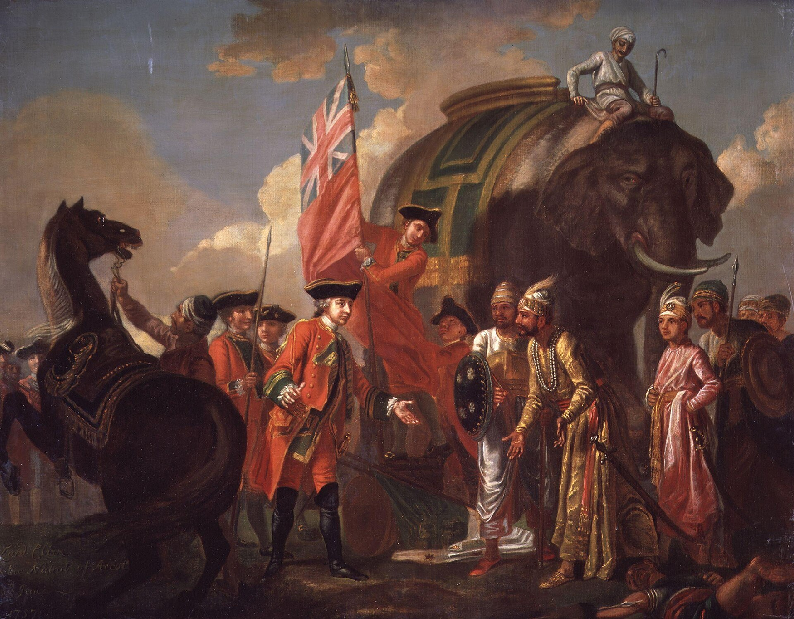
Reading the period: the four questions
The four questions that organise this book pressed hardest, in this period, on a single tension: Asia still made the goods, but Europe was acquiring the means to fight for the carrying of them. Begin with direction. The seventeenth century did not run as a smooth ascent out of the silver-welded world of the last chapter; it opened in the worst general crisis of the pre-industrial age. Geoffrey Parker’s reconstruction tied a datable climatic forcing — the Maunder minimum of near-absent sunspots, twelve Pacific eruptions between 1638 and 1644, a doubled frequency of El Nino — to a synchronous Eurasian breakdown: roughly fifty revolts and rebellions between 1618 and 1688, the fall of the Ming in 1644, and a death toll he put at perhaps a third of humanity. The period’s direction, then, was violent disintegration first, and only an uneven re-integration after. That sequencing matters for the whole book, because it dates any real divergence to after the crisis, not before it: whatever gap opened between Europe and Asia opened on the far side of a shock that fell on everyone.58
58 Sources: Parker (Loc 25) on the death toll; Parker (Loc 1,046, 1,054) on the eruptions and El Nino frequency; Parker (Loc 436) on the count of revolts. Read more: Parker (2013), Global Crisis.
59 Sources: Roy (p.95) on the Bengal-silk shipping comparison; Steensgaard (1974) on the eclipse of overland trade. Read more: Erikson (2014), Between Monopoly and Free Trade.
The channels question turns on which arteries carried the traffic, and the headline was the contest of the oceans. The armed company now fought for control of the sea-lanes, while the old overland caravan trade declined — Niels Steensgaard’s “eclipse of trade over land,” as the Cape and the open ocean drew the long-distance traffic away from the silk-road spine. The Atlantic ran in parallel as a second maritime system, its own sugar-and-slave circuit accumulating European capital and demand. But the companies did not own the water they sailed. Much of their success rode on the intra-Asian “country” trade that Emily Erikson recovered from the company books — Asian goods carried on Asian account, the trade the ledgers under-counted because they recorded only what the companies themselves shipped. The scale of the under-counting was large. In Bengal silk in the 1730s the English and Dutch together exported no more than about a hundred and fifty tonnes a year by sea, while Asian merchants moved roughly five times as much overland in the 1750s. The companies were the best-documented carriers, not the largest ones.59
That leaves Europe’s place, and the period is where it must be tested rather than assumed, because for the first time Europe held real levers. It had the armed joint-stock company, an institutional form Asia did not develop; it had naval supremacy in the contest of the oceans; it had the Atlantic plantation complex building capital and demand; and it was assembling a fiscal-military state, with the Bank of England founded in 1694 and a funded national debt that rose from £16.7m in 1697 to £132.6m by 1763 — credible borrowing that let Britain out-spend rivals and sustain a navy. And yet Asia was still the workshop. On the Bairoch-type estimates India alone made about a quarter of the world’s manufactures around 1750, and India dominated the world’s cotton-textile market with cloth Europe could not match in price or quality. Europe’s edge was institutional and military, not yet productive. The sharpest twist belongs to Prasannan Parthasarathi: it was Indian dominance itself that forced Europe’s response — the calico bans, the protective tariffs, and the long search for a mechanised substitute that would eventually become the cotton mill — so that Asia’s very centrality contained the trigger of the Industrial Revolution. This is a leading hypothesis, not a settled finding; Stephen Broadberry and Bishnupriya Gupta dispute the wage-parity premise on which the strong version rests, and the dating of the divergence remains open. The point to carry is the direction of causation Parthasarathi proposed, held as argument rather than fact.60
60 Sources: Findlay & O’Rourke (2007) on the Bank of England and the rise in the national debt from £16.7m (1697) to £132.6m (1763); Bairoch (1982) on India at ~24.5% of world manufacturing in 1750; Broadberry & Gupta (2006) on the wage-parity dispute. Read more: Parthasarathi (2011), Why Europe Grew Rich and Asia Did Not.
61 Sources: Eaton (Loc 7051, 7057) on the eastward bullion flow and absorption; Steensgaard (1974) on protection as a tradable input. Read more: Findlay & O’Rourke (2007), Power and Plenty.
Which leaves the modes question — how value moved, in what form, and under whose compulsion — and here two answers ran together. The first was the old one, only larger: the trade still settled in silver. The companies paid between two-thirds and seven-eighths of their Asian purchases in bullion, India absorbed perhaps a fifth of the world’s precious metals between 1600 and 1800, and around 185 tonnes a year flowed into the Mughal heartland, absorbed in Bengal without inflation — the mark of a money-demand economy rather than a money-supply shock. The second answer was new, and it was the period’s true institutional innovation: armed trade itself. Steensgaard’s insight was that the companies had made protection a tradable input, an internalised cost of doing business backed by their own forts and fleets, rather than a tax paid to others. The new mode was not a new commodity but a new way of settling the contest over who carried the trade — and the silver that still ran east is the thread the next box follows in full.61
ImportantFollow the money
The silver still ran east, and this is the chapter where the “follow the silver” thread does its heaviest work. The European companies settled between two-thirds and seven-eighths of their Asian purchases in bullion; India absorbed perhaps a fifth of the world’s precious metals between 1600 and 1800, at something like 185 tonnes a year into the Mughal heartland around 1600; and in Bengal the inflow was absorbed without inflation, the mark of a money-demand economy rather than a money-supply shock. The same silver met opposite fates elsewhere. In China and Mughal India it was absorbed and matched by manufactures exported, and the result was commercial florescence. Among the Ottomans, silver supply plus heavy debasement produced inflation and falling real wages. In West Africa, commodity monies debased while people and raw gold were exported, and the result was monetary divergence and depletion. One metal, several fates — and the difference lay in whether a region met the silver with rising money demand and the output of its labour, or with a flooded money supply and the export of its factors and stores of value.
Sources: Eaton (Loc 7051, 7057) on the eastward bullion flow and absorption; the silver framework drawn from von Glahn and from Pamuk & Ozmucur. Read more: Findlay & O’Rourke (2007), Power and Plenty; von Glahn (2016), The Economic History of China.
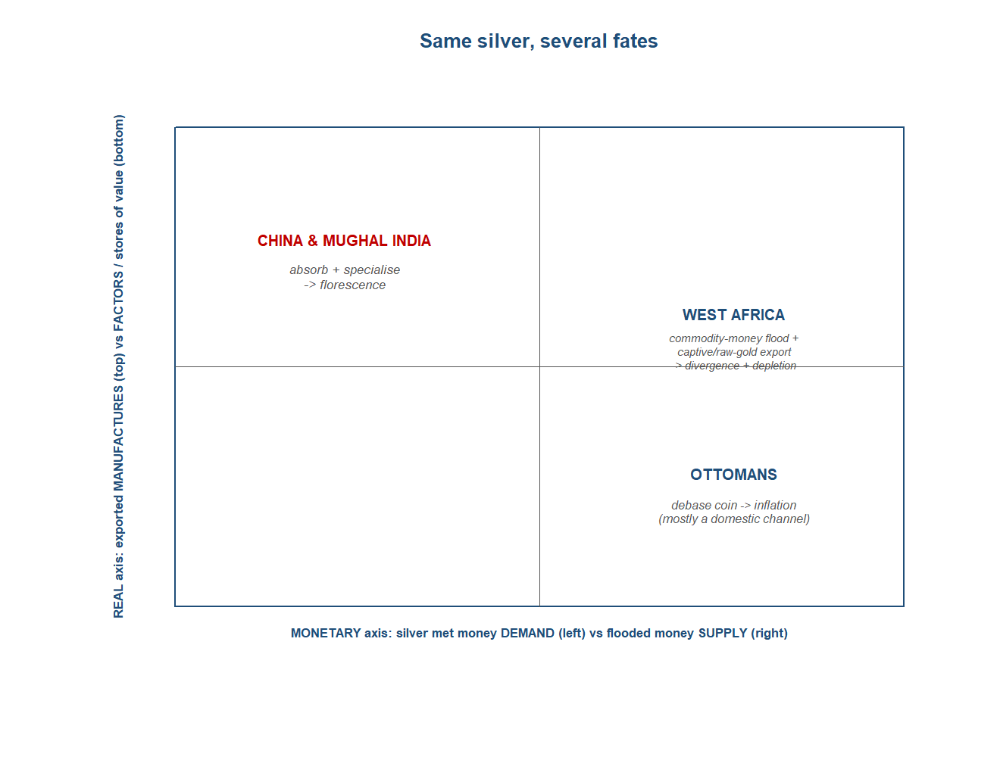
The verdict: where was the centre?
The verdict depends on the measure, and by the measure that mattered most for this period — where the goods were made — the centre was still firmly Asian as late as 1750. On the Bairoch-type estimates India and China together produced something like 57 per cent of the world’s manufactures, India alone about 24.5 per cent, and India remained the cotton workshop the whole world bought from. The silver still ran east to pay for that output, which is the surest sign of where the productive weight lay: you send your money toward the goods you cannot make yourself. By the production measure the confidence is high — the Asian centre held through about 1750. What had changed was that Europe now held the organised, armed, capital-rich levers of the divergence to come — the chartered company, sea power, Atlantic capital, the fiscal-military state — and at Plassey in 1757 it was, for the first time, locally triumphant, the English East India Company turning from trader into the territorial revenue-extractor of Bengal. The Asian production centre held; the European challenge was now organised and, in one province, victorious.62
62 Sources: Bairoch (1982) on India and China at ~57% and India at ~24.5% of world manufacturing in 1750; Eaton (Loc 7051) on the continuing eastward silver flow. Read more: Findlay & O’Rourke (2007), Power and Plenty.
63 Sources: Parker (Loc 16,435) on the welfare ratios (~4 baskets London vs ~1 at Beijing/Canton/Edo, c.1700). Read more: Parker (2013), Global Crisis.
That verdict needs one qualifier, because the production map and the welfare map had begun to part. The centre of production was Asian through about 1750, but the first consumption gap was already detectable by about 1700. On the welfare-ratio evidence a labourer’s minimum daily wage bought roughly four subsistence baskets in London against about one at Beijing, Canton or Edo — a real difference in what ordinary work could purchase, opening inside a world whose production centre was still in the east. A high-confidence Asian production centre and an early, narrow welfare gap are not contradictory; they are the two facts the next chapter has to reconcile.63
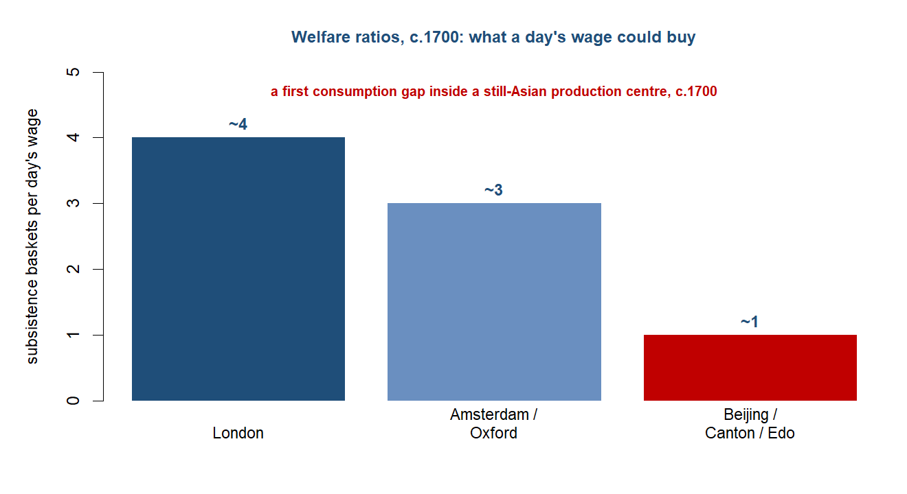
The deeper caution is about what “workshop of the world” actually measured, and it points forward. Asia’s manufacturing dominance was aggregate grandeur — the sum of a vast population’s output — not income per head. The clearest evidence is the involution of the Asian florescence: in the Yangzi delta, the best-documented case, family income fell by about 42 per cent between 1620 and 1820 even as output and population grew, and on the cliometric reconstructions China had slipped to roughly 55 per cent of the European leader’s GDP per capita by 1700, with the per-capita gap opening from about that date. Imperial scale, in other words, was not rising living standards, and reading the one as the other is the commonest error this period invites. The centre of production was still Asian; but the measure of success was quietly switching from quantity to quality, and on the new measure the verdict would not hold. The next chapter is the hinge, where mechanised cotton reverses the textile trade, India deindustrialises, and the centre of gravity finally moves west.64
64 Sources: von Glahn (Loc 4,531) on the ~42% fall in Jiangnan family income; Broadberry, Guan & Li (2018) on China at ~55% of the European leader’s GDP per capita by 1700. Read more: von Glahn (2016), The Economic History of China.
NoteResearch in focus — Broadberry, Guan & Li (2018): China, Europe and the Great Divergence
Aim. To date the divergence between Chinese and European living standards using national-accounting methods rather than wage snapshots. Question. When did Chinese GDP per head fall durably behind the European leaders, and was there ever rough parity? Data and method. Historical national accounts for China from about 980 to 1850, reconstructing output per head from agricultural, population and price evidence, set against comparable English and Italian series. Findings. China’s grandeur was aggregate, not per capita: output per head was already below the European leaders well before 1800, with the gap opening around 1700, so the “workshop of the world” reflected scale rather than rising living standards. Caveats. The result depends on contested assumptions in the historical national accounts — population, the farm budget, the price deflators — and parity-school scholars (Pomeranz and others) read the regional evidence as showing rough comparability to about 1800.
WarningThe debate: trade revolution, or Asian continuity?
The defining controversy of this period is whether the armed companies marked a genuine break. Niels Steensgaard argued that they did: by internalising protection and integrating markets, the joint-stock companies staged a “trade revolution” that displaced the older peddler-and-caravan mode and made the early-modern Eurasian trade something new. Against him, K. N. Chaudhuri’s study of the EIC’s trading world argued for continuity — that Asian merchant capitalism carried on much as before, that the companies depended on Indian intermediaries and Indian capital, and that the European role was a graft on an Asian system rather than its supersession.
A second, related debate concerns what the EIC was. Philip Stern’s “company-state” reading holds that the EIC was a sovereign, governing, war-making body from its earliest decades — not a trading firm that turned conqueror at Plassey, but an armed state-in-miniature throughout. Sushil Chaudhury’s Bengal-centred account puts the weight elsewhere: it was the province’s own pre-Plassey prosperity, and the indigenous bankers and financiers — the Jagat Seth banking house, the banian intermediaries — who delivered Bengal, as much as the company’s guns. Both debates turn on the same question this chapter keeps returning to: how much of what happened was European action, and how much was an Asian economy the Europeans had merely learned to tax.
Sources: Steensgaard (1974) and K. N. Chaudhuri (1978) on the revolution-versus-continuity debate; Stern (2011) and Sushil Chaudhury (2000) on the company-state debate. Read more: Steensgaard (1974); Stern (2011), The Company-State.
Data exhibit — shares of world manufacturing output, 1750. The chapter’s empirical centrepiece is a single comparison: on the Bairoch-type estimates, India alone produced about 24.5 per cent of world manufacturing output around 1750, China a further large share, and Asia as a whole something like 57 per cent — against a European share that was still smaller, and would only overtake Asia after the divergence of the next century. The figures are estimates, not an audited series, and Bairoch’s method has been criticised; treat them as orders of magnitude. But even read loosely they make the chapter’s point: at the close of this period, by the measure of where things were made, the centre of gravity was unambiguously Asian. What you could do with this: set Bairoch’s 1750 shares beside Broadberry-style GDP-per-capita reconstructions for the same date, and ask why the production leader was not the income-per-head leader — the gap between grandeur and growth.
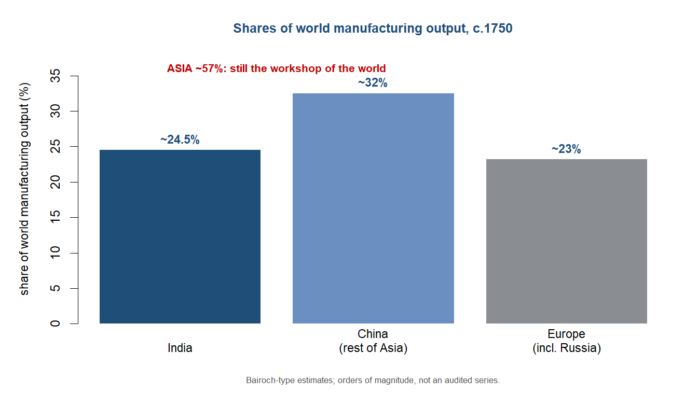
Threads forward
The chapter ends where the module’s hinge begins. By 1760 Europe held the tools of the coming divergence — the armed joint-stock company, naval supremacy, the Atlantic capital-and-demand machine, and at Plassey a territorial revenue — but Asia was still the workshop of the world. The seed planted four chapters ago, grown in the last, was now an armed contender; the flowering belongs to the next chapter, where mechanised cotton reverses the textile trade and India’s share of world manufacturing collapses from about a quarter in 1750 toward under three per cent by 1880.65
65 Sources: the hand-off to the Great Divergence; Bairoch-type manufacturing shares (India ~24.5% in 1750 to <3% by 1880). Read more: Findlay & O’Rourke (2007), Power and Plenty; Parthasarathi (2011), Why Europe Grew Rich and Asia Did Not.
66 Sources: the three-pole framing of the divergence debate (Parthasarathi, Pomeranz, Allen); Broadberry & Gupta (2006) on early divergence. Read more: Pomeranz (2000), The Great Divergence; Allen (2009), The British Industrial Revolution in Global Perspective.
What the next chapter has to explain is not only why Britain industrialised but why it did so then and there, and the field offers three rival answers that this chapter has already set up. Parthasarathi’s is competitive: Indian cloth was so good that Europe’s protectionist-and-innovative response — the calico bans, then the search for a mechanised substitute — was forced by Asian dominance itself, so that the Asian centre contained the trigger of its own eclipse. Pomeranz’s is resource-and-windfall: coal under the right places and the “ghost acres” of the Atlantic plantation system relieved the land constraint that bound China. Allen’s is factor-price: uniquely high English wages and cheap energy made labour-saving machinery pay in Britain when it would not have paid elsewhere. The chapter’s own verdict — a still-Asian production centre, but a first welfare gap detectable by about 1700 — leans toward an early divergence, and so sits closer to Broadberry and Gupta than to a strict parity-until-1800 view; the tension is real, and the next chapter is where it is resolved.66
Classic research: the foundations
The chapter’s organising claims — the armed company as an institutional novelty, Asia still the workshop, sugar and slavery building a rival oceanic system — rest on a bench of post-war global and economic historians.
- Steensgaard (1974), The Asian Trade Revolution of the Seventeenth Century: The East India Companies and the Decline of the Caravan Trade — the protection-cost thesis: the companies’ edge lay in internalising violence and integrating markets, displacing the older peddler-and-caravan mode; the institutional paradigm at the core of this chapter.
- K. N. Chaudhuri (1978), The Trading World of Asia and the English East India Company, 1660–1760 — the continuity counter-paradigm: Asian merchant capitalism persisted and the companies depended on Indian intermediaries, brokers and capital, qualifying any “revolution” reading.
- Mintz (1985), Sweetness and Power: The Place of Sugar in Modern History — sugar, slavery and the manufacture of mass consumer demand in Europe; the founding statement that the Atlantic plantation complex made markets, not just calories.
- Bairoch (1982), “International Industrialization Levels from 1750 to 1980,” Journal of European Economic History — the world-manufacturing-share estimates (India ~24.5%, Asia ~57% in 1750) that anchor the spine datum; widely used but contested estimates, to be read as orders of magnitude.
- Atwell (1982), “International Bullion Flows and the Chinese Economy circa 1530–1650,” Past & Present 95: 68–90 — the silver-flow interruption transmitted into the seventeenth-century Ming crisis; the strong form of the bullion-and-collapse argument, later disputed by von Glahn. [DOI 10.1093/past/95.1.68]
- Reid (1988), Southeast Asia in the Age of Commerce, 1450–1680 — the boom-and-bust of an island Southeast Asian commercial florescence that the VOC’s spice monopoly helped to close around 1640; the regional frame for the contest of the oceans.
At the research frontier: recent cliometric work
For this period the discipline’s action sat in three places: the dating of the Great Divergence through historical national accounts, the institutional economics of the chartered companies, and the demand-side “industrious revolution.” The frontier here measured living standards, not imperial scale. Every entry was citation-verified.
- Broadberry, Guan & Li (2018), “China, Europe, and the Great Divergence: A Study in Historical National Accounting, 980–1850,” Journal of Economic History 78(4): 955–1000 — reconstructed Chinese GDP per head and dated the divergence to around 1700, with China at roughly half the European leader’s level by then; the leading cliometric case against parity. [DOI 10.1017/S0022050718000529]
- Broadberry & Gupta (2006), “The Early Modern Great Divergence: Wages, Prices and Economic Development in Europe and Asia, 1500–1800,” Economic History Review 59(1): 2–31 — silver wages in Europe and Asia showing an early gap in real living standards well before mechanisation; the wage-evidence backbone of the early-divergence position. [DOI 10.1111/j.1468-0289.2005.00331.x]
- Ozmucur & Pamuk (2002), “Real Wages and Standards of Living in the Ottoman Empire, 1489–1914,” Journal of Economic History 62(2): 293–321 — a four-century Ottoman real-wage series; the silver-thread contrast case, with the inflation driven more by domestic debasement than by American silver. [DOI 10.1017/S0022050702000517]
- de Vries (1994), “The Industrial Revolution and the Industrious Revolution,” Journal of Economic History 54(2): 249–270 — the household-side argument that demand for new tradable goods drew more labour into the market before any technological revolution; the demand engine behind the consumption of Asian textiles and Atlantic sugar. [DOI 10.1017/S0022050700014467]
- de Vries (2008), The Industrious Revolution: Consumer Behavior and the Household Economy, 1650 to the Present (Cambridge University Press) — the book-length development of the industrious-revolution thesis, tying European demand for calicoes, coffee and sugar to a reallocation of household time.
- Parthasarathi (2011), Why Europe Grew Rich and Asia Did Not: Global Economic Divergence, 1600–1850 (Cambridge University Press) — the comparative-advantage account of Indian cotton dominance and the strong claim that Indian competition forced Europe’s protectionist and then mechanising response.
- Allen (2009), The British Industrial Revolution in Global Perspective (Cambridge University Press) — the high-wage-economy framework that turns the welfare-ratio evidence into an account of why mechanisation paid in Britain and not in low-wage Asia; the bridge to the next chapter’s hinge.
- Pomeranz (2000), The Great Divergence: China, Europe, and the Making of the Modern World Economy (Princeton University Press) — the parity-school benchmark against which the historical-national-accounts results are argued; held core Yangzi and English regions roughly comparable to about 1800.
NoteKeeping this current (verification gate)
Sweep date 2026-06: repositories searched include NBER, CEPR, RePEc/IDEAS, the Economic History Review, the Journal of Economic History, the European Review of Economic History and Explorations in Economic History; every entry above was citation-verified (Crossref/RePEc) before listing. Refresh before publication; never list an unverified working paper. For this period the discipline’s action sits in the divergence-dating debate (Broadberry-style national accounts) and in the institutional economics of the chartered companies.
Questions for consideration
Essay / exam style — reward the four-questions toolkit and the live debate, not recall.
- “By 1750 Europe had acquired the means of the divergence but not yet the divergence itself.” Evaluate this claim using the evidence on manufacturing shares, bullion flows and institutions.
- Was the chartered joint-stock company a genuine “trade revolution” (Steensgaard) or a graft on a continuing Asian commercial order (K. N. Chaudhuri)? Marshal the evidence for each side.
- “The same silver enriched Asia and impoverished West Africa.” Explain, using the two-axis framework of money demand versus money supply and manufactures versus factors.
- Was the East India Company a company-state from the start (Stern) or a trader that turned conqueror at Plassey (Sushil Chaudhury)? What turns on the answer?
- The Asian economies of this period were the workshop of the world but not the leaders in income per head. How should that distinction discipline the way we read “the centre of gravity”?
TipCross-cutting questions (collected at the end of the book)
The book closes with a bank of questions spanning several chapters. Those this chapter feeds:
- Follow the silver: trace one cohort of New World silver from the mine to its final resting place, and explain why it stopped where it did (Chapters 5, 6).
- Grandeur versus growth: when does aggregate scale stop being a good proxy for economic success? (Chapters 4, 6, 7.)
- Did Asia’s centrality contain the trigger of its own eclipse? (Chapters 6, 7.)
Data exercise
Key data
| Figure | Value | Source |
|---|---|---|
| India’s share of world manufacturing, c.1750 | ~24.5% (India + China ~57%) | Bairoch (1982) |
| New World silver into the Mughal heartland, 1586–1605 | ~185 tonnes/yr | Eaton (Loc 7051) |
| India’s share of world precious-metal absorption, 1600–1800 | ~20% | Eaton (Loc 7057) |
| EIC textile imports, c.1684 | ~1.76m pieces/yr (~83% of trade) | Eaton (Loc 7104) |
| 17th-c. gross profit, spices vs grain | ~300% vs ~30–40% | Krondl (Loc 3097) |
| Banda depopulation, 1621 | ~1,000 of ~15,000 survived | Krondl (Loc 3576) |
| China silver:copper ratio, 1638 to 1647 | 1:1700 to 1:6000 | Parker (Loc 2,438–2,441) |
| Jiangnan family income, 1620–1820 | fell ~42% | von Glahn (Loc 4,531) |
| Welfare ratio c.1700 (baskets per day’s wage) | London ~4 vs Beijing/Canton/Edo ~1 | Parker (Loc 16,435) |
| Africans enslaved, 17th c. | ~2 million | Parker (Loc 3,211) |
| British national debt, 1697 to 1763 | £16.7m to £132.6m | Findlay & O’Rourke (2007) |
Further reading
- Core: Findlay & O’Rourke (2007), Power and Plenty, ch. 5; Parthasarathi (2011), Why Europe Grew Rich and Asia Did Not; Steensgaard (1974), The Asian Trade Revolution of the Seventeenth Century.
- Supplementary: Prakash (1998), European Commercial Enterprise in Pre-Colonial India; Riello (2013), Cotton; Erikson (2014), Between Monopoly and Free Trade; Eaton (2019), India in the Persianate Age; Parker (2013), Global Crisis.
- The debate: Steensgaard (1974) vs K. N. Chaudhuri (1978), The Trading World of Asia; Stern (2011), The Company-State vs Sushil Chaudhury (2000), The Prelude to Empire; Mintz (1985), Sweetness and Power; Beckert (2014), Empire of Cotton; Green (2019), A Fistful of Shells.